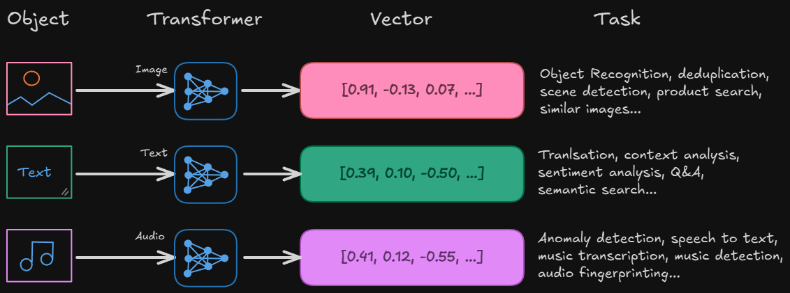
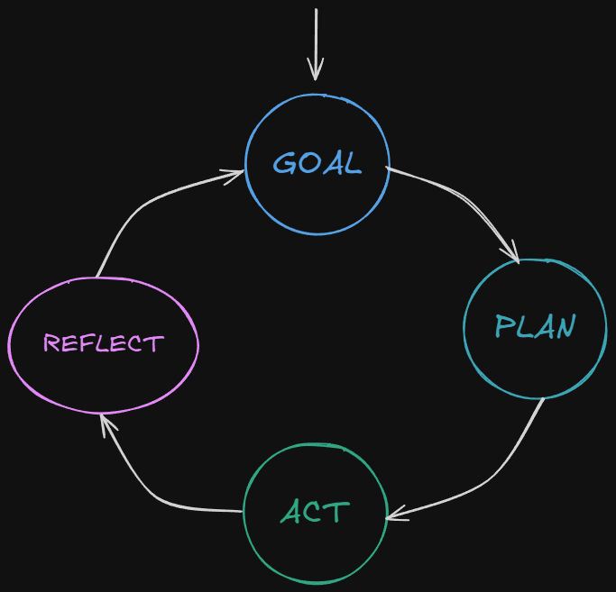
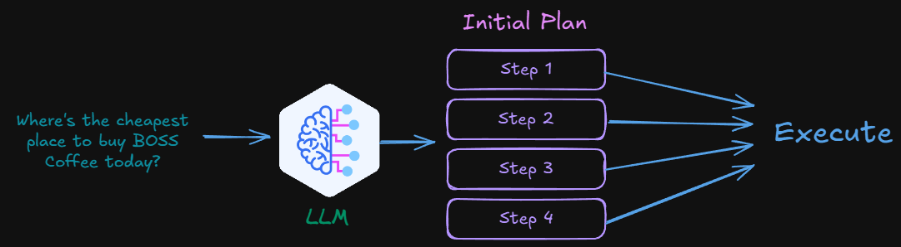

Foundations
Understanding the Building Blocks
⬢ Slides: thushan.github.io/workshop-agentic-ai
⬢ Source: github.com/thushan/workshop-agentic-ai
Building Smarter Loops with LLMs
Understanding the Building Blocks
Decision Trees, Random Forests, Regression
Worked well on structured/tabular data like spreadsheets and metrics.
CNNs, RNNs, Neural Nets
Powerful for images, speech, sequences. Set the stage for transformers.
How models convert objects into vectors
We can unify all modalities into one architecture...
→ Sets the stage for Agentic AI
Takes an input and produces a single output.
No memory, no planning, no tools.
Operates as a loop: Goal → Decide → Act → Reflect.
Adds memory, planning and tools use.
Claude Code refactored a large codebase with agents.
Industry shift toward multi-step AI with agents becoming a core pattern in modern frameworks.
Automates repetitive workflows, reduces friction and delivers a smoother user experience.
Drives nudges, improves mentor-mentee matching and gives admins clearer visibility
Search trusted sources (docs, knowledge base, support tickets) for relevant snippets.
Attach the retrieved context to the prompt so the model is grounded.
LLM produces an answer that cites and stays aligned with your data.
Ground outputs in your data → accurate, current and auditable
Ground LLM outputs with your company's data
Keeps your AI outputs fresh, accurate and aligned with your domain data - eg. Mentor Bios, skills, past session.
Tools fetch right context → model generates grounded answers
Retrieve relevant knowledge → Generate grounded output
Improving mentor-mentee connections with RAG
How Agents Think and Act
An agent is an AI system that decides, acts and learns in a loop - not just one-shot.
Agents combine LLM reasoning with memory and tools.
Query internal program data (bios, feedback, activity logs, skills, goals).
Send invites, reminders, or schedule mentoring sessions.
Look up knowledge base articles or policies to support mentoring.
Internal / External APIs, MCP Servers, Services - Slack
🤖 Tools let agents act, not just generate text.
💡 Remember Claude Code refactoring code?
Keeps track of the current conversation or task
Similar to an LLM context window
Persists knowledge across sessions
Can be stored in databases, embeddings or logs
Short what a mentor remembers from this session
Long the mentee's entire journey/history across the program
Agents can break a big goal into smaller sub-tasks.
'Boost engagement' → identify inactive mentees → draft nudge → send message
Reason + Act steps for lightweight planning
We're giving it space to think out-loud between actions.
LLM "thinks aloud" step-by-step
e.g. I need mentee's goals firstCall a tool or API, observe result
e.g. fetch mentee profile from MongoDBWe're not talking React, the Javascript library!
GPT or Claude Thinking/Reasoning?
Is this message supportive and on-brand?
MentorLoop in Action
Personalised engagement nudges with tools, memory, and evaluation
Admins get actionable summaries and next-best-actions
Reducing back-and-forth to get sessions booked
From Theory to Implementation
How devs bring loops to life in code
Most agentic frameworks were born here (LangChain, Autogen, Haystack)
Fastest place for new research + bleeding edge features
LangChain.js and LlamaIndex TS are now production ready
Vercel AI SDK + lightweight OSS make it natural for web devs
Python leads research · JS/TS is catching up fast for production apps
Rich ecosystem for chaining tools, memory and planning
Strong focus on RAG and data connectors · simple to plug into JS apps
Microsoft backed · skills, planners and memory APIs · Azure friendly
Multi-agent orchestration · collab workflows · Python first, JS bindings coming
Focus on search + RAG pipelines · early JS wrappers
Standard for exposing tools to agents · used in Claude + VSCode
Next.js / React friendly · fast way to ship AI features
Experimental OSS · agent loops in JS · fun but not prod ready
Agentic components embedded directly in JSX · experimental
Real-World Use Cases
Find at-risk pairs and draft supportive nudges grounded in program context
Deployment and Best Practices
OpenAI, Anthropic, Bedrock
Ollama, vLLM, LM Studio on AWS
Local inference with cloud fallback
Self-hosted, MentorLoop-owned database
Balance innovation with cost visibility → no surprise AWS bills
From raw logs → program health insights for admins
EDNA can't bulk email 200 mentees at once
⬢ Thank you